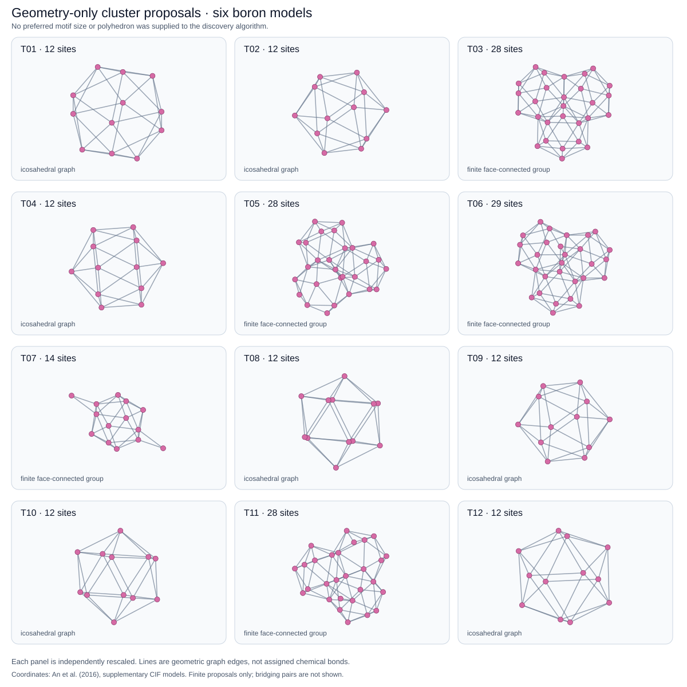

PROGRESS REPORT · 14 SEPTEMBER 2026 · NOT PEER REVIEWED
Learn local connections.
Test global reconstruction.
Geometric junction markings now support a connected reconstruction of τ-B106. The latest matched-budget test completes it in 57.6 seconds; the baseline remains unresolved at 100 seconds.
Family-wide benchmark: all six available 2016 boron coordinate models
Every supplied model is included, not just the easiest crystal. The two checks below answer different questions: does the supplied decomposition satisfy the learned point values, and can the reference-order search find a complete decomposition without being handed that selection?
| Coordinate model | Required atom positions | Supplied filling: t sums / m agreement | Search reconstruction |
|---|---|---|---|
| α-B | 324 | Pass | Complete |
| β-B105 | 2,835 | Pass | Complete |
| β-B106 | 2,862 | Pass | Unresolved, including the 300 s extension |
| γ-B | 756 | Pass | Complete |
| τ-B105 | 5,670 | Pass | Complete |
| τ-B106 | 5,724 | Pass | Complete; 57.62 s in the matched-budget study |
Five reconstructed; one still open. Counts refer to the 3 × 3 × 3 periodic observations, not primitive cells or independent samples. Completed witnesses have exact integer-capacity t sums, compatible scalar markings and connected positive support. Registration of motifs is approximate (0.03 Å); the subsequent finite point-value verification is exact. β-B106 is not proved impossible: a valid supplied filling exists, but these search runs have not recovered a complete one.
This covers the six acquired coordinate files, not every known boron polymorph. The additional τ-B106 S1–S10 coordinates have not been acquired. τ models are geometric test inputs, not a claim of thermodynamic stability; see the source and erratum notes. Learning uses these configurations and generated alternative decompositions. Independent transfer and continuous-pose growth beyond supplied coordinates remain unproved.
Earlier baseline: weighted silicon motifs
A fixed weighted motif library covers three additional silicon configurations. The simplest markings still fail to carry useful connection information.
The revised computational object
Clusters are weighted tiles. Their fixed t-values add to one; unfinished points with 0 < T < 1 drive continuation. Marking values m must agree on overlaps and may prune the resulting search. No requirement that every atom become a new cluster center is imposed by this filling rule. Geometric tolerance and exact filling are separate.
A restricted connected pair-cover proposal yields an inferred pair weight of 1/3. Composing pairs into two-edge paths gives three-site weights (1/3, 2/3, 1/3), inherited rather than independently fitted. Grouping the observed path geometry within 0.1 Å produces 16 types. This is a feasibility-preserving proposal mechanism, not yet a general cluster learner; no chemical coordination rule or force field is used.
| Source frame | Motifs / types used | Maximum pose residual | Independent check |
|---|---|---|---|
| 2 | 162 / 10 | 0.099154 Å | Exact filling; connected |
| 100 | 162 / 10 | 0.099513 Å | Exact filling; connected |
| 400 | 162 / 14 | 0.099404 Å | Exact filling; connected |
The fitting frames are 0 and 1. All five configurations come from the same published silicon source [9]; they are not established as independent specimens or pristine holdouts. Three timed-out mixed-integer solves were inconclusive. A bounded constructive procedure found the verified covers without changing the library. This is not a marked-versus-unmarked GCTS speed comparison.
A marking can fit perfectly and still say nothing
At the three atomic sites, every scalar type/site marking is linked to every other by observed overlap equalities: all 48 variables must have the same value. Such markings fit the samples but cannot reject any otherwise capacity-compatible join. Adding more identical scalar channels does not help. The conclusion is exact for this library, domain and trivial scalar rotation action—not for GCTS generally.
What happens when the markings rotate as vectors?
A numerical precheck with ordinary 3D vectors gives full column rank, 144, for the two-frame agreement system. The smallest singular value is 0.950517. With site-vector RMS magnitude normalized to one, the minimum RMS reference-pair mismatch is 0.283389. This is floating-point evidence for the stored poses, not a certified impossibility result or an exhaustive test of alternative representations. The downloadable standalone verifier below covers filling, geometry and scalar collapse, not this vector analysis.
What is still missing?
General joint discovery of support geometry and reusable t/m-values; informative, transferable markings; candidate generation without target coordinates; blind extension to larger structures; and validation of medium-range order, diversity and cost against appropriate materials baselines. Exact t-filling and m-agreement on observed witnesses are mandatory admission checks, not evidence that every legal partial assembly extends.
Run: node verify-weighted-reset.mjs weighted-reset-evidence.json. Checks five covers and the scalar equality graph. The production growth engine has not been replaced by this isolated experiment.
THERMAL ICE · OVERLAP AND SEARCH TEST · 14 SEPTEMBER 2026
Shared motifs can cover the samples.
The markings still do not guide assembly.
Data admission: common nominal conditions are not independent validation
A new provenance-only gate checks all 2,000 ice records. File-linked temperature/pressure evidence and independently documented trajectory identities remain missing, so the stronger same-condition and independent-holdout claims are not admitted. Exploratory geometry fitting remains allowed. The gate has one positive and thirteen negative controls, including missing values, mismatched conditions and shared trajectories.
The source preprint methods describe a random configuration split and distinguish sampling from target ensembles. Metadata are used only to assess evidence; they are not geometry or marking features. This standalone check does not yet intercept every historical training script.
A 200-frame pilot learns 350 six-site geometric representatives from 100 training frames and freezes them for 100 validation frames. Registration permits continuous proper rotations, with a maximum 0.15 Å site error. A positive-weight selection control finds connected covers for every frame. But the reference tree search reveals a gap between filling points and assembling a connected structure.
| Phase | Cases | Connected selection-control covers | Reference exact covers | Reference connected covers |
|---|---|---|---|---|
| Ih | 25 | 25 | 22 | 4 |
| II | 25 | 25 | 25 | 3 |
| VI | 25 | 25 | 25 | 1 |
| VIII | 25 | 25 | 25 | 0 |
The fitting loophole and the positive-weight control
The initial all-occurrences t-fit satisfies its training equations by setting 1,734 of 2,100 sites to zero, including 166 empty motif types. We do not admit that result as a growth library. A separate tested hypothesis assigns t=1/2 to each site and uses a specialized MILP to select connected covers. That is not a learned optimum or a replacement for reference search. The reference engine receives the full registered pool, never the selected answers, with all target atoms activated at generation zero.
Independent verifiers check rigid poses, rational/integer filling, scalar agreement and positive-support connectivity. The reference harness checks global decision priorities and root rollback. Next: learn anchors and useful matching constraints jointly with nondegenerate filling values, without hiding these failures behind the selection control.
Follow-up: train markings on selected tilings, not all competing candidates
We corrected the training scope: only occurrences coexisting in a selected training tiling supply equality constraints. Unobserved sites remain unconstrained. One witness per configuration gives 11 scalar classes; adding a second valid witness set gives eight. Conflicts in the original validation covers fall from 18 points to three, but the extra classes are tiny two-variable groups, not established structural order.
Both learned models still admit connected positive covers for all 200 pilot configurations under the specialized selection control. Neither improves reference-search completion: 97/100 finite covers and eight connected covers per lane. These are exploratory learned restrictions, not proved sound pruning; the uniform t=1/2 hypothesis and supplied-coordinate limitation remain.
WEIGHT INFERENCE · EXACT CONDITIONAL AUDIT
A feasible weight is not always
a determined weight.
The selected two-incidence tilings give equations of the form wu + wv = 1. Odd cycles in this equation graph force weights to 1/2; bipartite components retain a free complementary pair. With two training witnesses per configuration, 1,806 of 2,100 site weights are forced, 12 remain in six free pairs, and 282 are unobserved.
| Ih | II | VI | VIII | Total |
|---|---|---|---|---|
| 24 / 25 | 17 / 25 | 22 / 25 | 23 / 25 | 86 / 100 |
The other 14 covers fill at the chosen half weights but depend on parameters not fixed by training. This is not failure of those configurations, nor a new reconstruction score. It identifies uncertainty that must not be hidden behind a convenient weight assignment.
Exact proof, and its limitation
Independent checks rebuild 55,200 training equations, verify odd-cycle certificates and the full affine weight family, then perturb all 288 free parameters with exact quarter-unit arithmetic. The result is conditional on selected tilings originally constructed under a degree-two hypothesis: it does not establish unrestricted discovery of t=1/2 or solve joint occurrence and weight inference.
TARGETED TRAINING · WEIGHT AMBIGUITY REDUCED
Use the neglected roles.
Learn more from the same configurations.
Training-only targeting produced 38 additional connected tilings. Exact checks now force 2,082 of 2,100 site weights, leaving 18 unused variables. All 100 original validation covers fill independently of those remaining choices—up from 86, without changing the validation covers or adding atomic data.
Nine failed placement requests have exact, limited certificates
Rational dual certificates show that all nine rejected occurrences have zero allowable weight in their fixed degree-two graph relaxations. A separate verifier checks the bounds without an optimizer. These are contextual exclusions in that model, not proofs of geometric impossibility or permission to ban whole motif types. More complete witness sampling also merges the scalar equality graph back to two assigned classes; useful marking constraints remain unresolved.
BEYOND THE PILOT · 300 MORE CONFIGURATIONS
Freeze the learned library.
Test the remaining validation frames.
With no new templates or tolerance tuning, 347 weight-identified motifs support connected covers for all 300 remaining validation configurations across Ih, II, VI and VIII. An independent audit verified 83,218 registered occurrences. The three types with unresolved weights remain recorded, without guessed assignments.
| Method | Exact finite covers | Connected covers | Unknown |
|---|---|---|---|
| Specialized connected selection | 300 | 300 | 0 |
| Reference point search | 289 | 27 | 11 |
| Parent-exclusion search control | 291 | 28 | 9 |
Frozen settings, verification and reproduction
All 300 frames were excluded from pilot motif and weight fitting. The proposal radii and 0.15 Å matching tolerance are unchanged. The reference and exclusion controls each use 10,000 advances / one second per case and receive no selected-cover answer. Independent checks verify periodic geometry, exact point sums, marking consistency and connectivity. Exclusions are local to proved failed parent choices and are reversible; the variant is not silently substituted for the reference baseline.
ALTERNATIVE MARKINGS · PROMISING COMPUTATIONAL CONTROL
One motif can have several markings.
Do not branch on redundant flips.
A restricted binary model allows two flipped markings for each learned pair motif. All 238 selected training tilings and all 300 selected validation covers admit compatible assignments. Explicitly searching both variants performs poorly; tracking relative marks instead removes redundant choices while preserving exactly which physical covers admit compatible decorations.
| Representation | Exact finite covers | Connected covers | Unknown |
|---|---|---|---|
| Unmarked reference | 289 | 27 | 11 |
| Explicit binary variants | 218 | 15 | 82 |
| Relative-mark quotient | 289 | 85 | 11 |
What is exact, what is learned, and what is biased?
The two-port binary hypothesis and contrast objective are chosen explicitly; type contrasts satisfy training constraints. Compatibility of flipped variants is equivalent to consistency of relative binary point equations. The quotient maintains that equivalence without prematurely fixing component colors. Independent tests cover 80 small models, 3,220 candidate-domain checks, distant dependency changes and rollback; separate verifiers check all reported ice solutions. This research plug-in does not modify the production kernel.
ROBUSTNESS CHECK · A NEGATIVE RESULT
Change the decomposition.
Do the learned rules survive?
The earlier binary result depends strongly on which motif covers we treat as training examples. Three alternative exact covers for each of 100 training configurations give 300 additional witnesses, selected without a connectivity or marking preference. The original binary rule rejects 152 of these covers. All rejected covers are disconnected; this tests decomposition sensitivity, not whether a physical growth rule must accept them.
| Marking hypothesis | Contrasting motif types | Validation covers admitting a lift | Search: complete / connected |
|---|---|---|---|
| Original even-cycle training | 347 | 300 / 300 | 289 / 85 |
| Refit with alternative covers | 7 | 295 / 300 | 284 / 25 |
What the check establishes—and what it does not
All alternative covers have exact half-weight filling; 51 are connected. Random linear-cost selection is not uniform cover sampling and repeated covers are possible. Training uses no validation witnesses. Rejecting five chosen validation covers does not prove those five configurations lack another compatible cover. The test does not require the final model to preserve every disconnected decomposition. It exposes the need to learn motif occurrence selection and connection rules jointly, rather than privileging arbitrary training covers.
Independent atom-incidence checks reconstruct the marking equations, verify rank 344 and enumerate the eight remaining assignments. Small tests cover 160 binary systems and 10,200 assignments. Search uses the same finite target-coordinate pools and nominal budgets as before; no blind growth, physical parity law, or controlled timing advantage is claimed.
REAL ICE COORDINATES · FIRST-LAYER TEST · 14 SEPTEMBER 2026
Four ice phases. 2,000 snapshots.
One geometry-derived component rule.
We acquired the published DFT-data files for Ih, II, VI and VIII, preserving their 1,600 training / 400 validation split. A threshold learned only from training distances identifies 184,000 three-atom components across all snapshots. Every component has OHH composition when inspected afterwards: no molecular formula or chemical bonding rule was supplied to the grouping algorithm.
| Phase | Train / validation frames | Validation components | OHH after grouping |
|---|---|---|---|
| Ih | 400 / 100 | 12,800 | 100% |
| II | 400 / 100 | 9,600 | 100% |
| VI | 400 / 100 | 8,000 | 100% |
| VIII | 400 / 100 | 6,400 | 100% |
How we kept the experiment geometric
The learner sees shuffled coordinates, element labels and periodic cells, not energies, forces, phase labels or formation history. Grouping uses only distances. A training-only gap from 1.094335 to 1.418840 Å gives a 1.256587 Å threshold. An independent parser verified all 552,000 atom instances; a separate periodic-image / union-find implementation reproduced the components. No exact source-ordered geometry duplicates were found; this does not prove trajectory independence.
Data: author repository, accompanying Kaur et al.. Raw coordinates are not rehosted pending license clarification.
The paper's sampling methods specify NPT at 100 K and 1 bar, giving paper-level evidence for a shared protocol. Mapping that protocol to the released files and establishing independent trajectories remain open checks; these conditions are not inputs to the geometric learner.
ICE FAMILY · VERIFIED COVERS, NOT BLIND GROWTH · 14 SEPTEMBER 2026
One frozen dictionary.
Four held-out ice configurations.
Alternative motif groupings recover complete weighted covers for two hexagonal and two cubic ice controls without adding test-specific motifs. The 79-type, nine-site dictionary was fitted on four other synthetic configurations. These are generator-based structural tests, not samples established to share temperature and pressure.
| Test | Matched alternative paths | Selected motifs | Exactly filled atoms |
|---|---|---|---|
| Ih c002 | 685 / 768 | 128 | 384 / 384 |
| Ih c003 | 688 / 768 | 128 | 384 / 384 |
| Ic c006 | 384 / 384 | 64 | 192 / 192 |
| Ic c007 | 384 / 384 | 64 | 192 / 192 |
Why alternative groupings matter
A fixed grouping initially failed on both hexagonal test configurations. Searching alternative unions recovered exact filling without changing the dictionary. Selection uses a specialized graph-matching control, not the reference GCTS tree-search algorithm. Missing motifs in one grouping do not establish that a material cannot be represented.
BORON FAMILY · SHARED FILLING UPDATE · 14 SEPTEMBER 2026
One learned filling can cover six boron models.
Useful connection markings remain missing.
We checked all six coordinate models supplied with the 2016 boron study, including both τ models. All pass independent input checks. These are six configurations, not six established phases or an exhaustive boron census.
Ten reported variants are missing data—not ten tested crystals
S-1 through S-10 now have explicit pending rows in our corpus register. The correction's published coordinate link redirected to Google sign-in in this session; we did not obtain the files. No learning or growth result is assigned to them, and overlap with the original six models remains undetermined. File-level conditions and corrected-coordinate provenance must be established before admitting a matched cohort. These metadata will define evaluation groups, not become physics or chemistry rules inside GCTS.
| Training model | 0.05 Å tolerance | 0.01 Å tolerance |
|---|---|---|
| α, β-105, γ, τ-105 | Exact positive filling | Exact positive filling |
| β-106, τ-106 | Numerical restricted LP infeasibility | Exact positive filling |
| All six with shared weights | Numerical restricted LP infeasibility | Exact positive filling |
What was learned, and what was verified?
Three-site supports are proposed from short geometric paths, with proper rotations and all site permutations. Shared site weights are fitted across observations, with approximate self-symmetry ties; fractions are checked by exact substitution and, where necessary, exact linear-system polishing. The independent checker rejects corrupted poses, point identities, weights and markings. Non-atomic anchors are not learned here. No tree search or complete continuous-pose enumeration is claimed. The tighter-tolerance experiment followed inspection of the first failures.
Configuration holdout: the current filling does not yet transfer
0 / 6 omitted configurations pass frozen-weight replay under the current first-match, all-matched-occurrences rule. Each library is rebuilt from the other five inputs only; all six training fits pass. This qualifies the 6/6 pooled-training result above: shared coverage is not evidence of generalization.
| Omitted model | Matched / proposed supports | Exactly filled atoms | Under / overfilled atoms |
|---|---|---|---|
| α | 91 / 148 | 0 / 12 | 12 / 0 |
| β-105 | 1,335 / 1,419 | 3 / 105 | 96 / 6 |
| β-106 | 1,210 / 1,442 | 5 / 106 | 70 / 31 |
| γ | 216 / 412 | 0 / 28 | 24 / 4 |
| τ-105 | 2,558 / 2,838 | 6 / 210 | 128 / 76 |
| τ-106 | 2,287 / 2,888 | 0 / 212 | 165 / 47 |
Each frozen scalar marking is constant. This is not a proof of failed reconstruction: alternative template correspondences and subsets of placements have not been searched. All six inputs share a source, and the tolerance was selected during prior development, so this is not independent-source validation. The next test must let the search choose placements rather than require every recognized occurrence.
Allowing occurrence selection repairs finite coverage
A separate, unmarked variant reaches exact coverage in all six development holdouts. Training now chooses which occurrences contribute, and selects a shared reciprocal weight from a small declared family. Each five-input fold selects t = 1/3 before the omitted structure is tested. The geometric dictionaries remain frozen.
| Held-out model | Selected placements | Connected components |
|---|---|---|
| α | 12 | 3 |
| β-105 | 105 | 7 |
| β-106 | 106 | 1 |
| γ | 28 | 1 |
| τ-105 | 210 | 1 |
| τ-106 | 212 | 6 |
Enumerating alternative template and site matches alone did not repair the old weights: every finite candidate pool still had exact capacity deficits. Relearning within a uniform-weight family while selecting training occurrences produced the new witnesses. An independent verifier checks geometry, exact incidence and component counts. Three covers are disconnected; no marking or reference-tree-search advantage is claimed. This uses a mixed-integer subset solver and known target coordinates, and was designed after inspecting previous failures.
Reference tree search: nonconstant markings, mixed results
The point-value engine now finds finite covers for all six held-out targets without markings. Scalar equality markings learned only from the selected training covers produce 19–58 observed classes, rather than one constant. Five marked searches finish; marked τ-106 reaches the 100,000-step budget.
| Held-out model | Unmarked backtracks | Marked backtracks | Marked outcome |
|---|---|---|---|
| α | 3 | 6 | Finite cover |
| β-105 | 21 | 177 | Finite cover |
| β-106 | 0 | 24 | Finite cover |
| γ | 258 | 258 | Finite cover |
| τ-105 | 843 | 44 | Finite cover; disconnected |
| τ-106 | 78,707 | 88,390 | Budget unknown |
The unchanged kernel checks global dead ends, global forced moves and then generation-first branching. Independent incidence reconstruction, integer filling, scalar agreement, inventory uniqueness and root-state rollback checks pass. Every target atom is a generation-zero root in this finite test; separate synthetic tests check generation priority. Target coordinates still supply the poses, and continuous-pose completeness is not claimed.
Robustness check: most scalar distinctions depend on the chosen cover
We generated eight more valid covers of each training configuration, then pooled their marking equalities with the original covers. All 270 covers across the six folds pass independent integer checks. These are alternative decompositions of existing coordinates—not additional material samples.
| Omitted model | 1 cover/input | 3 covers/input | 9 covers/input |
|---|---|---|---|
| α | 46 | 16 | 1 |
| β-105 | 42 | 14 | 3 |
| β-106 | 37 | 16 | 1 |
| γ | 43 | 17 | 2 |
| τ-105 | 58 | 13 | 3 |
| τ-106 | 19 | 18 | 4 |
With the candidate IDs and order held fixed, the pooled markings allow all six finite searches to finish. Five marked runs reproduce baseline counters exactly; τ-106 saves just seven backtracks out of 78,707. The earlier τ-105 reduction disappears. The original labels conflict with 206 of the 240 additional unmarked covers, demonstrating sensitivity to cover choice—not a proof that every possible cover must be preserved.
Rotation-aware vectors: average fit hides localized errors
We next assigned a vector to each motif site and transported it by the occurrence rotation. Fixed-pose cycle checks find no nonzero exactly agreeing field on the largest training component in any fold, numerically. A separate sparse global approximate fit avoids forcing tree equations exactly, but concentrates almost all magnitude on a small subset of sites.
| Omitted model | Overlap RMS | Worst overlap | Participation fraction |
|---|---|---|---|
| α | 0.128 | 7.14 | 0.633% |
| β-105 | 0.176 | 11.56 | 0.143% |
| β-106 | 0.152 | 5.94 | 0.692% |
| γ | 0.174 | 10.16 | 0.229% |
| τ-105 | 0.167 | 10.46 | 0.187% |
| τ-106 | 0.153 | 8.31 | 0.228% |
Participation fraction measures how widely vector magnitude is distributed; 100% means uniform magnitude. Independent checks confirm the eigen-equations and residuals. These fields were not promoted to growth rules or tested on held-out structures: their large worst-case training errors do not establish useful matching. The result concerns one vector per bare geometric template site, not all vector representations or GCTS. Context-dependent marked variants and learned anchor domains remain to be tested.
Multiple marked variants per motif: representation works, prediction remains weak
We now allow a geometric motif to carry several learned markings. A training-only geometric neighbor-count descriptor yields 900–1,334 marked variants from 633–851 geometric types. Every learned variant is offered at every matching held-out pose; the target neighborhood does not choose the variant.
| Omitted model | Collapsed baseline backtracks | Expanded baseline backtracks | Marked backtracks |
|---|---|---|---|
| α | 3 | 38 | 134 |
| β-105 | 21 | 18,706 | 783 |
| β-106 | 0 | 450 | 38,025 · budget unknown |
| γ | 258 | 21,478 | 74,661 · budget unknown |
| τ-105 | 843 | 41,059 · budget unknown | 2,839 |
| τ-106 | 78,633 | 118 | 1,063 |
This is a declared geometric-descriptor hypothesis, not chemistry. It demonstrates multiple markings on shared motif geometry, but not accurate connection prediction or blind growth. Explicit surrounding geometry or learned anchor domains remain to be investigated.
Larger clusters emerge from geometry without a prescribed shape
A new proposal algorithm merges short-contact graph triangles sharing an edge, without prescribing a center atom, motif size or polyhedron. Periodic winding checks reject system-spanning components as finite motifs. Fallback pairs retain atoms and connections outside the finite groups.

Across the six 3×3×3 samples, 783 finite groups register to 12 templates at 0.03 Å tolerance. All 405 observed 12-site groups have icosahedral graph connectivity, identified after discovery. Independent checks validate all 24 radius/supercell runs, including periodic edges, winding, coverage and proper rotations; finite size counts scale consistently between 2×2×2 and 3×3×3 samples.
Can those larger clusters actually fill the observations?
We now fit shared site weights on the 12 finite templates plus four periodic fallback-pair types: 219 variables. Every proposed occurrence is included. Proper self-registration witnesses tie equivalent roles; pair endpoints are tied by an exact proper rotation. The fit maximizes the smallest t-value, followed by independent rational verification at every atom.
| Input | Exact positive filling | Minimum t | Scalar m-classes |
|---|---|---|---|
| α | Pass | 1/2 | 2 |
| β-105 | Pass | 1/6 | 5 |
| β-106 | Restricted obstruction | — | — |
| γ | Pass | 1/3 | 2 |
| τ-105 | Pass | 1/6 | 5 |
| τ-106 | Restricted obstruction | — | — |
| All six jointly | Restricted obstruction | — | — |
What makes these failures exact, rather than numerical?
For filling equations Aw = b, an exported rational certificate y satisfies Aᵀy ≥ 0 and bᵀy < 0. Nonnegative weights would require yᵀAw ≥ 0, contradicting yᵀb < 0. A separate verifier rebuilds the permitted equations from the occurrences and checks the certificate exactly. The same failures remain when all role ties are removed. Across both lanes, eight positive fits and six restricted obstructions pass independent checks; mutation tests reject corrupted weights, certificates and occurrence lists.
All six configurations contribute to this exploratory dictionary; supercell replicas are not independent data or a common-temperature/pressure ensemble. Atom-site anchors are still proposed from coordinates. These results do not establish learned non-atomic anchors, blind reconstruction, or growth beyond an input.
Joint selection crosses the six-model training barrier
Rather than use every proposed occurrence, we now learn which occurrences to include together with one shared set of positive site weights. The same 16 geometric types fill all six inputs. After a connectivity refinement, independent checks confirm exact totals and one connected positive-support network in each full supercell: 18,171 atoms and 13,419 selected occurrences.
| Model | Connected training witness | Unmarked search | Marked search |
|---|---|---|---|
| α | Verified | Complete, connected | Complete, connected |
| β-105 | Verified | Complete, connected | Complete, connected |
| β-106 | Verified | Budget unknown | Budget unknown |
| γ | Verified | Complete, connected | Complete, connected |
| τ-105 | Verified | Complete, connected | Complete, connected |
| τ-106 | Verified | Budget unknown | Budget unknown |
Why don't 78 learned marking classes solve the hard cases?
Labels can differ without removing useful candidates. The four completed models either have no marking conflicts or have conflicts already forbidden by local capacity. β-106 and τ-106 have only 27 and 54 local site-pair disagreements, respectively, that pass the same site's capacity test. This does not establish that those pairs are globally legal, or demonstrate a speedup. Both hard cases still reach the 15-second search budget.
What is—and is not—verified?
Training weights, selected occurrences, symmetry ties, scalar agreement and connectivity are checked independently. Search uses the unchanged reference point engine with global dead/forced checks and generation-first branching, with forward/reverse graph audits and root semantic rollback checks. A separate verifier reconstructs the frozen candidate models and checks final states. All target points are generation-zero roots and target coordinates are known: this is in-sample finite reconstruction, not blind growth or a complete continuous-pose search. These inputs are not a condition-matched ensemble.
The unrestricted full-supercell joint optimizer first reached a 30-second budget with no solution. The periodic training variant has 653 translation-orbit choices rather than 17,631 independent occurrence choices; this is a different, restricted optimization problem, not a like-for-like speed comparison.
The next scientific task is to learn connection rules that help search on the difficult cases and transfer beyond their training observations—without substituting target IDs, stored answers or a unit-cell copier for those rules.
Search diagnostics: sound pruning is not yet enough
Learning across the family: shared overlap contexts, but no new completed reconstruction
Two candidate-ordering learners withhold each target's selected witness and use the other five structures: one ranks motif frequencies, the other ranks overlap contexts described by neighboring motif types and shared symmetry-role pairs. Unknown contexts fall back to motif frequencies; no candidate is forbidden by either score.
| Target | Shared / target context classes | Occurrences with shared context | Shared classes with mixed selection labels |
|---|---|---|---|
| β-106 | 27 / 90 | 2,268 / 4,779 | 7 |
| τ-106 | 27 / 133 | 2,565 / 7,884 | 6 |
There is transferable local overlap information, but it does not determine the chosen decomposition. Across 24 new runs, both rankings still complete four structures and leave β-106 and τ-106 budget-unknown. The independent checks verify counts, feature invariance, target-witness withholding and final fillings. These are ordering controls, not learned GCTS prohibitions, calibrated physical probabilities or wholly held-out reconstructions.
Latest: conflict proofs now compose through forced moves
The new proof-producing control derives forced implications, combines them with dead-point clauses by ordinary propositional resolution, and checks the resulting branch exclusions. An independent verifier accepted all 82,872 proof nodes and 4,661 registered clauses in the twelve-run boron test. None excludes the known connected training fillings.
Proof-directed backtracking skips intervening frames only when a verified clause justifies it, then returns to the global dead/forced/earliest-generation scheduler. Small exhaustive tests and independent mutation controls check the inference rules. This closes the earlier proof-composition gap, but not the reconstruction problem: β-106 and τ-106 still reach the time limit. Proof generation, storage and auditing are costly. These are fixed-model search constraints, not transferable learned GCTS markings or a demonstrated materials advance.
Follow-up: faster bookkeeping is not enough either. A linear frontier scan matches the original decisions in 20,000 hard-case advances. In those prefixes, β-106 repeats a previously seen placement set at 1,034 of 1,329 branch visits per lane; τ-106 at 859 of 1,084. Different stacks can share a placement set, so this is not a pruning certificate. Across 24 additional runs, neither the linear scheduler alone nor its combination with parent exclusions and a filling-weight preference resolves the two hard models. All final states pass independent checks; the production kernel is unchanged. Methods and limitations · Trace checks · Linear scan runs · Preference-control runs
Alternative decompositions: both hard boron structures admit different connected fillings
A specialized optimization control selects occurrences independently, without the earlier periodic selection lock and without enforcing m-values. All twelve attempts across six structures return connected exact fillings. On β-106, the two new fillings differ from the original by 1,077 and 1,144 selections; on τ-106, by 890 and 865. Every resulting overlap still agrees with the learned markings.
Independent checks rebuild atom sums, connectivity and markings; 24 corrupted fillings are rejected. Adding the alternative fillings introduces no new distinct t-equations: the rank remains 156 on 157 roles. Multiple decompositions therefore exist, but these particular alternatives supply no additional local equality constraints.
This is not a GCTS search success. The specialized optimizer supplies additional training witnesses; the reference-tree hard cases remain unresolved. It is a useful competing baseline, not evidence of an advantage for our method. The inputs are still known-coordinate, cross-structure controls, not a condition-matched or coordinate-blind growth result.
Exact result: learned markings preserve every complete filling of the six finite boron models
We exhaustively checked all pairs of placements with disagreeing m-values. Direct t-capacity overflow excludes most pairs. The remaining 81 pairs—27 in β-106 and 54 in τ-106—are excluded by independently verified rational completion bounds. Each bound proves that at most one member of its pair can appear in any exact unmarked filling.
Consequently, marked and unmarked complete solution sets coincide for these six frozen candidate models. This strengthens the previous alternative-witness checks to a finite-model certificate. Markings may still prune doomed partial states earlier; equality of complete solution sets does not imply identical search behavior.
Scope matters: these proofs use the full supplied target and candidate universe. They are not transferable material laws, continuous-pose guarantees or infinite-growth certificates. They concern the original learned weights. No speedup is established, and reference search on the two hard cases remains unresolved.
Certified static pruning: 1,674 impossible placements excluded, hard searches still unresolved
Exact rational certificates exclude 486 candidates in β-106, 162 in γ, and 1,026 in τ-106 from every complete unmarked filling. No training selection is used to generate these certificates. The full candidate pool is retained in the research engine; verified exclusions act through its normal point/candidate graph, preserving global dead/forced/generation-first scheduling.
Independent Python and BigInt checks validate the proofs. Twelve marked/unmarked runs still complete four structures and leave the two hard cases budget-unknown. γ becomes entirely forced. These are finite-target constraints, not transferable learned markings or a demonstrated end-to-end speedup. Removing these impossible single placements alone does not resolve the combinatorial choices.
Representation limit: extra invariant channels cannot strengthen the current equality marking
The current 78 scalar classes are the connected components of the training equality graph. Any training-compatible invariant channel must be constant on each component. Assigning distinct labels already makes every distinction available on that fixed role domain; additional channels alone cannot introduce stronger matching rules.
A new prototype removes the m-symmetry ties while retaining t-symmetry, learns 89 classes on 219 template sites, and enumerates the stored rotational decoration variants. All six training fillings remain valid. Nevertheless, β-106 and τ-106 retain exactly the same candidate-level forbidden pairs and partial-state legality. The other four models acquire additional variants; no new growth result is claimed.
Independent checks validate the equality partition, 81 proper self-pose witnesses, variant compilation and training fillings. This points toward enlarged marking domains, different representation actions or jointly revised motif decompositions—not merely more invariant channels. The prototype does not establish exhaustive continuous rotations or transfer beyond the supplied configurations.
Rejected anchor proposal: more marking points, but no shared connection observations
We proposed pair-midpoint anchors inside the motifs, keeping t-values unchanged. All 2,097 template anchor variables have zero sharing between distinct selected clusters in the training fillings. The 1,617 resulting label classes therefore do not demonstrate learned connections. Across all six compiled models, every new marking conflict is already forbidden by t-capacity.
A separate incidence checker confirms that selected cluster pairs share at most one atom and verifies the compiled anchor conflicts. Geometric identity here uses fine fractional-coordinate snapping, not tolerance-complete continuous matching. This is a failed domain-admission test, not a new growth result. The next anchor proposal must actually overlap across neighboring clusters.
New geometric proposal: learn halo locations from neighboring clusters
The learner collects external atoms of selected neighboring clusters, registers them into each motif frame, and clusters recurring locations. It proposes 303 halo anchors for twelve full-dimensional motif types: 146 are supported in every observed occurrence of their type, and 45 occur in more than one source configuration. These are conditional geometry proposals, not mandatory atoms or learned matching rules.
Independent pose and neighbor reconstruction confirms support counts and observed-point coverage within 0.019264 Å. All 783 full-dimensional training occurrences pass a global rigid-transform check. Four pair types remain deferred because an axis does not determine rotation about that axis.
This advances anchor proposal beyond unshared internal midpoints, but m-values and a complete transported halo domain remain unimplemented. Periodic copies are not independent evidence; self-symmetry, alternative neighborhoods and tolerance-consistent identities still require work before search. No new growth or transfer result is claimed.
All six available boron structures: halo training passes, search remains four of six
The halo proposal above has now been compiled and tested: every transported location is retained, including 8,154 unmatched points as marking-only sites. A new channel learns 64 equality classes while preserving the original t-values and marking channel. All six training fillings and twelve previously generated alternative fillings pass independent checks.
| Structure | Atoms | Training t/m | Original markings | With learned halo |
|---|---|---|---|---|
| α-B | 324 | Pass | Complete | Complete |
| β-B105 | 2,835 | Pass | Complete | Complete |
| β-B106 | 2,862 | Pass | Budget unknown | Budget unknown |
| γ-B | 756 | Pass | Complete | Complete |
| τ-B105 | 5,670 | Pass | Complete | Complete |
| τ-B106 | 5,724 | Pass | Budget unknown | Budget unknown |
No search advantage demonstrated. The halo adds 540 and 972 capacity-compatible pair exclusions in β-B106 and τ-B106, respectively, but every pair touches a candidate already ruled out by the earlier global zero-support certificates. Extra checks add overhead and do not resolve the two difficult cases.
This is reconstruction on known coordinates, not blind growth. Geometric identities use fixed representatives within 0.03 Å; arbitrary continuous poses and pair-axis rotations remain unresolved. All six structures contributed to fitting. These are the six available coordinate sets from the 2016 study—not every boron crystal; ten additional τ-B106 variants remain unavailable. The subsequent erratum withdrew the τ ground-state assignment, not its usefulness as a geometric test.
Follow-up control: combining sound filters still leaves the two difficult boron cases unresolved
We combined the certified zero-support exclusions with residual-capacity propagation and parent-local branch exclusions, retaining the full candidate pool and reference decision order. Exhaustive tests on 100 small models (33,376 subsets) confirm satisfiability agreement; 362 visited states pass graph checks and rollback.
All twelve boron runs pass independent final-state checks. Both marked and unmarked lanes still complete four of six inputs; β-B106 and τ-B106 remain budget-unknown. Full residual rebuilding adds substantial overhead. This is a negative combination control, not a speedup or new growth result. It motivates revisiting joint motif/decomposition learning rather than adding more of the same filters.
Beyond single motifs: verified compound proposals transfer between boron configurations
The difficult decompositions contain thousands of pair connectors. We now learn compounds comprising a larger motif and neighboring connectors, with explicit expansions to original placements and exact aggregate t/m checks. Whole neighborhoods were too specific to transfer; smaller matched subcompounds do recur across configurations.
| Target | Cross-configuration compounds | Guided search |
|---|---|---|
| α-B | 0 | Complete |
| β-B105 | 324 | Complete |
| β-B106 | 54 | Budget unknown |
| γ-B | 0 | Complete |
| τ-B105 | 270 | Complete |
| τ-B106 | 54 | Budget unknown |
An independent checker validates 783 source occurrences and 39,123 geometric witnesses, with maximum external residual 0.028527 Å. Pair reversal is tested against t/m values, not arbitrary endpoint numbering. Compounds only guide candidate ordering: the full base pool, global propagation and earliest-generation rule remain intact.
Representation progress, not a performance advance: baseline and guided search both complete four of six inputs. The prototype adds overhead and does not resolve either B106 case. Base t/m remain jointly fitted on all six structures; this is not an independent same-condition test or blind growth. The next missing coverage is the pair network beyond the neighborhoods of larger motifs.
New reconstruction: learned junction markings complete τ-B106
τ-B106 now has an independently verified connected finite filling: all 5,724 atom positions, 5,427 base placements, and 2,052 compatible junction choices. The extended run completed in 93.48 seconds; β-B106 remains unknown after 300 seconds. Five of the six available structures now have verified finite reconstructions across these experiments, with different budgets—not a uniform-budget success rate or speedup claim.
The new learner records which geometric connector combinations coexist at a point. Six original plus twelve generated alternative fillings produce 388 junction templates. The original t/m values remain unchanged. An explicit compiler realizes the junction choices as ordinary scalar marking variants, and the native verifier checks all eighteen training records plus the new search witness.
| Input | Junction points | Admitted states | Extended search |
|---|---|---|---|
| β-B106 | 1,350 | 11,016 | Unknown at 300 s |
| τ-B106 | 2,052 | 7,587 | Complete at 93.48 s |
To avoid expanding β-B106 to 111,942 marked copies, the search keeps label choices implicit and feeds candidate exclusions into the reference frontier graph. This is a learned restricted model with an explicit marking interpretation, not a proof that unseen connections are impossible. Training only on the original fillings was rejected as a shortcut: it excludes all four genuinely different withheld B106 decompositions.
Independent geometry checks cover 6,322 source and 19,305 target fits within 0.03 Å. Small exhaustive tests verify the projected encoding, propagation and rollback. There is no matched extended-budget baseline yet, no independent same-condition cohort, and no blind-growth claim.
Matched-budget result: τ-B106 completes with required-connection guidance; baseline remains unresolved
Junction propagation can establish that a connection is required even when a frontier point has several legal candidates. A declared generation-tie policy now prefers those connections. Global dead ends, degree-one moves and earliest-generation priority are unchanged; preferred required connections remain branch choices in the counters.
| Input | Original marked baseline | Learned junctions + preference |
|---|---|---|
| β-B106 | Unknown at 100 s | Unknown at 100 s |
| τ-B106 | Unknown at 100 s | Complete at 57.62 s; zero backtracks |
The new τ filling has 5,400 placements, covers all 5,724 atoms, and is connected. It differs from every training decomposition of that input by at least 819 placement additions/removals. Independent checks verify the t/m filling and its explicit scalar marking lift. This is a new decomposition on the same coordinates—not a new atomic structure.
The β extension remains unknown at 300 seconds. The learned lane restricts the allowed fillings and is fitted on these configurations, so this positive operational result is not a universal speedup, independent generalization or blind-growth claim.
Connection geometry: both neighboring junctions must fit under one rotation
Two junctions can each match a learned motif yet have an unobserved relative twist. The new learner represents their combined neighborhood, including the connecting arm, and fits it with a single proper rotation within 0.03 Å. It learns 3,876 joint templates without physics or chemistry rules. Arm permutations are allowed; reflections are not silently treated as rotations.
| Input | Class-only state pairs | Joint-geometry state pairs | 100 s reconstruction test |
|---|---|---|---|
| β-B106 | 49,464 | 47,025 | Unresolved with or without coupling |
| τ-B106 | 18,792 | 18,369 | Complete with or without coupling |
All eighteen training records remain valid under explicit scalar marking lifts. Independent checks validate 42,332 source fits and 65,394 target fits. A hundred rotation/permutation controls pass, while a synthetic relative twist passes separate-star matching but fails the joint test. The search still uses the reference frontier graph and generation priority, with the previously declared generation-tie preference.
Better connection representation, no new reconstruction or speedup demonstrated. The joint τ run completes in 53.04 s versus 49.19 s for independent junction states; both take 5,401 advances. Its 5,724-position filling, 4,266 selected coupled connections and scalar marking lift pass independent checks. These are exploratory timings, not an end-to-end performance claim.
Only 54 accepted β combinations and 207 τ combinations have recorded templates supported by another configuration. This is template-mediated sharing, not a held-out transfer test; most joint arrangements remain configuration-specific. The scalar state labels are compiled for each fixed target, not yet portable motif markings for new positions. Broader sampling, shared rotation-covariant markings and verified condition-matched cohorts are still needed. The other four structures have no pair-only junction-to-junction edges, so this layer does not change their models.
Portable markings: geometric values that rotate with the motif
The new export replaces target-local state IDs with intrinsic geometric marking values: colored displacement clouds attached to motif anchors. The catalog contains 16 base motifs with learned t/scalar-m values and 3,876 cloud-decorated pair variants. Rotations act on the markings as well as the anchor geometry; overlap comparisons do not fit away a relative twist.
| Input | Endpoint assignments | Common-value groups | Consensus found without target-cloud input |
|---|---|---|---|
| β-B106 | 16,624 | 4,050 | 4,050 / 4,050 |
| τ-B106 | 25,708 | 6,156 | 6,156 / 6,156 |
With uncertainty, every overlapping assignment must admit one shared cloud value—not merely pairwise-close values. All 10,206 tested groups have verified witnesses, including after rotation. The 0.06 Å marking radius accounts for errors in both endpoints of a displacement; the largest observed marking residual is 0.03851 Å. Two hundred exhaustive-permutation controls and adversarial overlap tests pass.
A portable representation, not yet a portable growth engine. Placement registrations still use known configurations, and the search has not yet been switched to these cloud markings. The witness proposer is incomplete: a failed proposal is unknown, not grounds for pruning. Decoration applicability, complete pose enumeration, frontier integration and independent condition-matched family tests remain open. The other four structures have no relevant junction-to-junction edges in this check.
What does family-wide training actually determine? An exact weight audit
With the six selected connected fillings fixed, 18,171 atom equations reduce to 166 distinct constraints on 157 shared site weights. Their exact rank is 156: 154 weights are individually fixed; only three vary together along one parameter. The result is certified by independent modular rank and a rational null vector, not a numerical threshold.
| Omitted input | Remaining degrees of freedom |
|---|---|
| None | 1 |
| α | 3 |
| β-105 | 7 |
| β-106 | 29 |
| γ | 8 |
| τ-105 | 19 |
| τ-106 | 53 |
The difficult variants supply constraints not present in the simpler members. These are equality-space dimensions, including roles that may become unobserved—not independent physical parameters or proof of transfer. Periodic replicas do not add independent equations.
A balanced-weight control changes the three variable weights from (1,11,1)/12 to (6,6,6)/12. All six connected training fillings remain exact. Twelve new marked/unmarked searches still complete four structures and leave β-106 and τ-106 unresolved. Balancing this freedom alone is insufficient; alternative decompositions and informative learned markings remain open. The changed t-model is not a same-problem speedup comparison or blind growth result.
We tested two additional controls on the frozen six-model problem: exact subset-sum checks on each point's remaining capacity, and reversible exclusions of candidates that have already failed in their parent search state. Both act through the point/candidate graph; neither adds chemistry, new learned markings or a stored answer.
Results and independent checks
Each control, and their combination, was tested marked and unmarked on all six inputs: 36 new runs. All variants still complete α, β-105, γ and τ-105 with connected covers. β-106 and τ-106 remain budget-unknown. Capacity pruning makes γ entirely forced, but this audit-oriented implementation rebuilds the full state and adds considerable overhead. Some runs overlap in execution; these are diagnostic controls, not isolated timing measurements or a speedup claim.
Exhaustive subset enumeration on 50 small models checks capacity-filter safety; another 150 models test failed-choice exclusions with and without that filter. No compatible completion is removed in the tested states. Graph, reverse-index, marking-only dependency and root rollback checks pass. A separate final-state verifier checks all 36 material runs; legality of a partial result does not mean reconstruction is complete.
The original kernel and production growth app are unchanged. The wrappers are explicitly labelled search-control variants. The six connected training witnesses remain valid, but useful transferable markings and successful search on the hard cases are still open.
Earlier pair-support control
| Model | Atoms / cell | Exact positive filling / 6 | Other outcomes |
|---|---|---|---|
| α | 12 | 5 | 1 verification/positivity gate failure |
| β-105 | 105 | 0 | 6 restricted LP infeasibility reports |
| β-106 | 106 | 0 | 6 restricted LP infeasibility reports |
| γ | 28 | 5 | 1 restricted LP infeasibility report |
| τ-105 | 210 | 0 | 6 restricted LP infeasibility reports |
| τ-106 | 212 | 0 | 6 restricted LP infeasibility reports |
Scope, reproducibility and next cases
Pairs are grouped by observed length; endpoint-symmetric weights are fitted and checked by exact rational substitution. This is a finite periodic-quotient diagnostic, not an infinite-lift certificate. LP infeasibility is numerical, not independently certified. Larger irregular motifs and non-atomic marking supports remain to be learned. Tetragonal variants, δ/B52, reported pseudo-cubic B52 and high-pressure α-Ga-type boron are still queued for coordinate acquisition. The production growth app is unchanged.
HISTORICAL PRELIMINARY REPORT · 13 SEPTEMBER 2026 · PREVIOUS CENTERED-SUPPORT MODEL
Model boundary: The geometric checks below remain useful, but the centered-support completion requirement differs from the weighted filling model in the current progress report. These are not results from the revised pipeline.
From a consistent patch
to a structure that can continue
A verified finite extension—and a precise explanation of why it does not yet keep growing.
The experiment, not an illustration
The pilot uses 6,912 complete centered neighborhoods from 32 development frames of the silicon dataset used in the connection-transfer study. These are correlated configurations, not 32 independent specimens. The fixed 14-atom prefix is itself a generated patch, not a held-out experimental configuration. Ten additional support placements produce a union with 34 distinct atom identities, 14 centered supports and 60 site-to-atom bindings. Shared sites are counted once.
Fixed-prefix atom Added atom Obstructed triple. Colors denote computational roles, not elements; all atoms are Si. Lines show tested distances, not chemical bonds.
Loading the saved coordinates…
What is verified—and what is not
| Test | Observed result | Interpretation |
|---|---|---|
| Finite assembly | 14 fixed atoms → 34 atoms; 14 centered supports, 60 bindings. | Exact binary-rational checks verify the supplied union, residual bounds, inherited identities and complete-neighborhood consistency, conditional on separately audited source poses. |
| Second continuation | 20 new-center obligations; two candidates registered, none selected. | The frozen proposal model exhausted a zero-degree root. This is not failure of every continuous extension. |
| Alternative representatives | Two distinct verified 34-atom witnesses; both retain the same obstruction. | Local consistency alone does not ensure that every newly created atom can acquire its own support. |
| Geometric lookahead | 223 finite locations; 92 visited states; four rejections from one distinct triple certificate; no surviving witness. | The implementation reports finite-catalog exhaustion. The audit authenticates the endpoint and replays the certificate, not every DFS transition. |
| Reversible growth rounds | Independent synthetic tests demonstrate actual inherited Master rollback, preserved atom obligations and non-pruning on Unknown. | Mechanism established; the production two-level material test has not yet been run. |
The obstruction is geometric, not chemical
For one generated center and two neighboring atoms, all 83,182 distinct donor-site injections fail necessary distance conditions across the 6,912-support library. The certificate involves two newly added representatives and one inherited atom. It does not prove that the original 14-atom prefix cannot extend, nor does it establish a universal exclusion of the two implicated support types.
The new, explicit admission rule bounds the distortion of every indexed source/world site distance by τ. With a pinned center and representative error at most ε, the reverse triangle inequality gives:
neighbor–neighbor discrepancy ≤ 2ε + τ
Here ε = 0.1 Å, τ = 10−8 Å and the neighborhood radius is approximately 2.99554 Å. Admission and obstruction checks use exact arithmetic on the stored binary64 coordinates. Pair distances alone do not certify a proper rotation or chirality; those remain separate source-transport checks. No oxygen–hydrogen rule, coordination chemistry, potential energy or formation history is imposed.
A conflicting triple stays conflicting when more atoms are added without moving or removing its members. This allows early rejection of a partial representative assignment. Backtracking can remove that triple and explore another choice. The lookahead is currently a declared geometric supplement, not yet a point-marking encoding or a measured GCTS acceleration. The finite orientation and position proposal families must not be confused with complete coverage of continuous space.
Numerics, timing and independent verification
The lookahead run reported 41,960 iterator comparisons and 97,092 lookahead work units in 32 calls. It exited normally after 371.884 ms; one positive RSS observation was 150,519,808 bytes. A separate earlier alternatives run had only a zero-valued RSS sample, so its memory evidence is classified as Unknown. Neither measurement is a continuous peak-memory certificate or a speedup result.
The obstruction was independently rechecked using integer-square-root intervals, in addition to the original radical-elimination arithmetic. All 14 existing poses pass the new exact pair-distance admission. The saved-run audit checks source hashes, historical authentication contexts and individual certificates. It does not independently reconstruct the entire search trajectory; the reported exhaustive finite traversal is an implementation result supported by exhaustive small-case tests.
The first 34-point union found in the research sequence had additional necessary-separation violations. An alternative union removed those violations but still encountered the stronger continuation obstruction shown here. These failures motivated the successive checks; they were not discarded to report only successes.
What would constitute a meaningful materials result?
The next test retains the parent search and revises support placements when their representative family fails. A positive milestone must assign supports to all atoms exposed by the preceding round and independently verify the resulting union. Even that would not demonstrate bulk amorphous structure.
A scientific advance still requires repeated extension to substantially larger configurations; independent test configurations; density, scattering, angular and higher-order/network diagnostics beyond RDF alone; output diversity; and matched comparisons including training, search and verification costs. A geometric generator need not use physics internally, but its outputs must earn their relevance to materials science through independent validation. The current result is a reproducible diagnosis of the local-to-global difficulty—not a solution to the structure of glass.
ABSTRACT
When is a description of local atomic order sufficient to construct a larger material?
Recurring coordination environments provide a language for discussing crystals, quasicrystals and glasses. Their identification, however, does not by itself specify how they can be assembled: shared atoms must be identified consistently, local motifs must cover the configuration, and compatible neighborhoods must remain compatible when loops close. We formulate a research programme in which a learned cluster library and its geometric overlap constraints define a family of admissible atomistic configurations. GCTS supplies a constructive, reversible search for members of this family.
The intended contribution is an inspectable connection between local structural information and global realizability—not a model of physical growth kinetics. We place this programme alongside cluster analysis, quasicrystal matching rules, information-constrained reconstruction and generative models of amorphous materials. Prototype experiments delimit what is currently established: an ice example exposes the weakness of reference-site membership as a reconstruction metric, while a matched implementation benchmark demonstrates reduced bookkeeping cost without changing the measured search. An extended eight-run study adds coverage and neighborhood diagnostics but still does not demonstrate general amorphous generation or an advantage of learned GCTS markings.
A rotation-invariant connection-transfer study shifts the method development to quasicrystalline and amorphous data. Across 24 published silicon configurations and disjoint regions of an 8,302-site Cd–Yb model, it separates recognizing a motif from recognizing its connection. Cross-motif distance channels detect rigid hinge alternatives that individual-motif descriptors cannot distinguish. The transfer–selectivity trade-off, including failures, is measured explicitly; these local results do not yet establish successful amorphous bulk generation.
Latest progress report: verified weighted-cover transfer and pre-search marking limitations establish representational progress, not blind growth or a performance advantage. The earlier centered-support study and 144-configuration safety study remain available with their original model assumptions.
The materials hypothesis is testable: can explicit geometric assembly rules produce larger, distinct configurations with held-out structural fidelity, while requiring less data, less search or less subsequent relaxation than an appropriate alternative?
01 / THE MATERIALS QUESTION
From a vocabulary of motifs to rules of assembly
A useful local motif need not be a molecule, a nearest-neighbor shell or a convex polyhedron. Here it is a finite set of labeled atomic positions, possibly irregular and overlapping other motifs. A catalogue of such motifs tells us what recurs. An assembly model must additionally explain which relative arrangements are admissible and how their shared atoms are counted.
This distinction matters differently across material classes. A periodic crystal supplies a controlled reconstruction test. A quasicrystal asks whether local overlap information can constrain nonperiodic long-range order. An amorphous material asks for a family of different configurations with appropriate structural statistics, rather than a single recovered arrangement. We do not assume one finite cluster library will solve all three tasks.
Why a theorist might care
The framework turns a structural interpretation into a falsifiable construction problem. If a proposed motif library systematically leaves uncovered sites, the description is incomplete. If its allowed overlaps admit unwanted order, the constraints are insufficient. If additional constraints suppress held-out observed arrangements, they are too restrictive. Search can expose these failures on tested instances; only a complete, correctly specified search can certify impossibility for its declared problem.
02 / MATERIALS CONTEXT
Building on precise cluster and reconstruction methods
Materials science already has algorithmic descriptions of local order. Sun and colleagues compare packing motifs with a cluster-alignment method in metallic liquids and glasses [1]. Such methods motivate our starting point, but recognizing an environment and constructing a complete configuration from it are different tasks.
The closest conceptual precedent is quasicrystal matching-rule theory. Kalugin and Katz describe an algorithmic procedure to extract and validate matching rules from phased diffraction data, with a geometric framework and a mechanism for robust long-range quasiperiodic order [2]. Thus neither “geometric matching rules” nor “extract rules from structural data” can serve as a standalone novelty claim here. A substantive comparison must identify what our representation, input assumptions and constructive search add.
| Approach | Connection to this programme | Question for GCTS |
|---|---|---|
| Cluster alignment [1] | Identifies recurring local packing motifs. | Can learned overlaps turn the motif catalogue into a covering, constructive model? |
| Quasicrystal matching rules [2] | Connects geometric local constraints to long-range order. | What can be inferred from finite noisy position samples, and what can the search actually certify? |
| Amorphous network generation [3] | Constructs structural models of amorphous Si and Ge. | Can sample-derived rules recover network structure without prescribing the same network model? |
| Reverse Monte Carlo; information-constrained reconstruction [4], [5] | Uses structural observations and constraints to reconstruct configurations. | Do explicit overlap relations retain useful information beyond the chosen aggregate observables? |
| Amorphous diffusion models [6] | Generate configurations and assess local order, connectivity, diversity and properties. | Can inspectable rules improve data efficiency or constraint satisfaction at matched output quality? |
Limbu and colleagues demonstrate amorphous-silicon reconstruction without total-energy functionals and evaluate electronic and vibrational properties [5]. Yang and Schwalbe-Koda report rapid amorphous generation with structural and mechanical validation [6]. These set a more relevant standard than computational speed alone. Avoiding a force field inside the generator is not, by itself, a new materials method.
Our proposed role is complementary: construct geometric candidates with an inspectable record of the local rules they satisfy, then test them against independent structural or physical evidence. The usefulness and novelty of that integration remain to be demonstrated.
03 / A LOCAL-TO-GLOBAL FORMULATION
What must a cluster model specify?
The following is a proposed formal framework for the research programme, not a claim that every component is implemented. Let the observations be finite configurations X = {(xᵢ, sᵢ)}, where xᵢ ∈ ℝᵈ and sᵢ is an opaque species label. For ensemble learning, each observation also carries its preparation conditions and provenance; these are not inferred from coordinates.
1. Motifs, motions and error bars
A motif Cₐ is a finite labeled point set. Its placement is gCₐ, where g is an allowed rigid motion. In three dimensions, rotations and translations may be allowed without restricting orientations to a lattice; reflections must be declared separately. Exact copies can be grouped modulo these motions. Approximate matches instead require a label-preserving point correspondence and an explicit residual criterion, such as maximum position error ≤ ε.
Approximate closeness is not generally transitive. Consequently, “one representative per isometry class” is exact language; noisy motifs require an operational clustering rule, representative and uncertainty model. Varying ε and reporting sensitivity is part of the scientific analysis, not merely a display setting.
2. Overlaps, coverage and consistency
An overlap rule specifies the allowed relative poses of two motifs and the identities of any shared atoms. Multiple motif descriptions may refer to one atom; that atom must not be duplicated. Pairwise acceptable registrations do not alone guarantee that correspondences and poses remain consistent around a loop or across a larger neighborhood.
Coverage must also be explicit. Every observed atomic site should be accounted for, including sites outside the most conspicuous motifs. If spatial cells or interstitial volumes are intended to be covered, their domain and coverage criterion must be supplied separately. A union of atomic point supports does not automatically tile physical volume. “Gap-filling clusters” therefore require a declared meaning of gap, rather than an ad hoc chemical rule.
3. The admissible family is not a probability distribution
This definition names a family of realizations. It does not assert that the family is nonempty, that a finite patch extends indefinitely, or that a finite proposal generator explores it completely. An observation may motivate a rule without proving it necessary. An overlap missing from finite training data is unobserved—not automatically forbidden.
For a fixed candidate universe and boundary specification, adding constraints can only shrink the admitted family. The scientific task is to remove unwanted configurations without excluding valid held-out ones. Successful reconstruction of training data is a necessary diagnostic for a model intended to explain those data, not evidence that this trade-off has been solved.
Nor does finding members of Ω specify their relative frequencies. A deterministic tree search can strongly bias the structures it returns. To claim an amorphous ensemble, one must separately define and test a sampling procedure, motif frequencies and diversity. To claim thermodynamic sampling would require further physical justification.
04 / CONSTRUCTIVE REALIZATION
GCTS as a test of geometric realizability
The input is a finite labeled point configuration. Species labels are treated as symbols: the search is not told molecular stoichiometry, bond chemistry, energies or a target lattice. Recurring supports are compared geometrically; placements are represented by rigid poses and approximate point correspondences. The reference cell used in evaluation does not enter the search.
Point values and the frontier graph
The base search maintains a complete incidence graph between current frontier points and the registered candidate placements. Each placement assigns occupancy values t and optional marking values m at points. Exact coverage requires occupancy sum 1; partial states may not exceed 1. Marking assignments must agree where both are defined. A missing assignment is unconstrained, not zero.
In the material adapter, anchor occupancy and labeled support-site assignments are supplemented by an observed-overlap predicate. This relational geometric plug-in is not yet an equivalent compilation of the learned relations into point-value GCTS markings. “Learning” here includes extraction of recurring geometric relations; it is not evidence of a trained neural field or an RL advantage.
Search contract and continuous-space limits
Maintain frontier ↔ candidate incidence, including marking-only dependencies. Check globally certified dead ends. Propagate globally certified forced moves. Otherwise branch at the earliest generation; degree breaks generation ties. On failure, restore the exact semantic state and try the next alternative.
Rigid poses live in continuous space, but this implementation registers a finite, geometry-derived set of proposals with tolerance ε = 0.03 in sample coordinate units. It does not enumerate every possible rotation or correspondence. A singleton in an incomplete proposal domain is not a proved forced move, and an empty sampled domain is not a proof of impossibility. These material runs use incomplete-domain semantics.
Computational support, not the materials hypothesis
After a placement changes points Δ, the local variant revalidates candidates whose recorded dependencies meet Δ. The baseline updates the same frontier state and revalidates every cached candidate. Both use the same legality predicate, geometric relation cache, proposal policy, rules and scheduler. Thus the intervention targets redundant evaluation work, not a different admissible solution set.
This optimization relies on complete dependency tracking for every state-dependent constraint. The tests below check equivalence on bounded executions; they do not constitute a proof for all geometric inputs.
Incremental constraint maintenance and reversible search have established algorithmic precedents [7], [8]. The benchmark below evaluates their use in this implementation; it does not establish a new general search algorithm.
EXPERIMENT LOG / TWO NEW ROUNDS
Local accuracy is not configuration safety
We froze each protocol before evaluating its new test configurations. Across two disjoint 72-configuration silicon subsets, we tested whether geometry-only connection rules retain entire observed connection sets—not just most individual connections. Neither preparation history nor physical potentials enter the learner.
| Held-out experiment | Configurations preserved | Eligible twists rejected |
|---|---|---|
| Nearest joint descriptor, 48 training frames, 99th-percentile cutoff | 6 / 12 | 0.70% |
| Same descriptor, maximum-calibration cutoff | 12 / 12 | 0.04% |
| New distance envelope, separate test split | 12 / 12 | 9 / 5,487 (0.164%) |
| Learned minimum-spacing baseline, same second split | 12 / 12 | 14 / 5,487 (0.255%) |
No setting passed the exploratory promotion gate. In round 1, 99.51% local retention still invalidated half the test configurations. In round 1b, every envelope rejection was already caught by the spacing baseline. These results do not establish a GCTS advantage; unsuccessful settings have not been installed as production growth constraints.
The next hypothesis is multi-motif loop closure: can reusable geometric markings expose jointly inconsistent connections earlier than an already-correct geometric search? This requires coupled completion tests with identical candidate sets, shared-point consistency, and total computational costs. The tested twists are not physical negatives, and preservation here concerns six-point diagnostic supports—not a complete material cover.
Methods, failures and next experiment · Frozen round 1 protocol · Frozen round 1b protocol · All 18 round 1 settings and raw scores · All 3 round 1b settings and raw scores
QUASICRYSTALS AND AMORPHOUS STRUCTURES
Learn the connection, not just the cluster
Two recognizable motifs can still meet in an unfamiliar way.
We introduce an experimental compatibility representation with channels that span two overlapping motifs. It is invariant to a common rotation and translation, but sensitive to relative motion. The experiment tests a specific representational limitation and a sample-size trade-off before attempting to use the representation for large-scale growth.
A geometric identifiability test
Consider two rigid motifs A and B sharing exactly two distinct anchors. Rotation of B about their common axis leaves each motif unchanged up to rigid motion. Consequently, any rule that depends only on separate rigid-motion invariants f(A) and f(B) is identical at every hinge angle. Generic cross distances |a − Rθb|, with a in A-only and b in B-only, are not. This elementary obstruction motivates connection channels; it is not claimed as a new rigidity theorem. Sharing three non-collinear, identified points would remove this hinge freedom.
Our diagnostic uses two four-point motifs with two shared anchors and two exclusive nearest neighbors each, within a 6 Å reach. These are deliberately controlled support proposals, not a claim to have discovered the optimal motifs. Within-motif channels contain sorted, label- and role-stratified pair distances; connection channels add the A-only/B-only cross distances. Similarity is the maximum component difference to the nearest training descriptor. The descriptors are O(3)-invariant: they also identify mirror images and may have homometric collisions. They are compatibility features, not a complete proper-isometry classifier or a physical potential.
Data and leakage controls
Amorphous-silicon data: 24 separate 216-atom configurations from Rosset, Drabold and Deringer [9], divided in file order into eight training, eight calibration and eight test configurations. All selected headers specify the 1010 quench label and terminal 293 K/10 ps anneal. They belong to a preparation-parameter sweep; identical pressure, statistical independence and an equilibrium ensemble are not established. The original periodic cell is used solely to reconstruct local neighborhoods across the sample boundary, not as a growth lattice.
Quasicrystalline data: 8,302 sites from the finite published Cd–Yb model [10]. Training, calibration and test use spatial slabs with disjoint atomic supports: 803, 225 and 770 connections, respectively. A 6 Å outer margin avoids the ordinary crop boundary; finite six-dimensional enumeration is retained and is not an infinite-model completeness certificate. Regions of one deterministic model are not independent experimental replicates.
Silicon contributes 1,230 training, 1,224 calibration and 1,246 test connections. Training sizes are nested: 1, 2, 4 and 8 configurations. Quasicrystal training uses deterministic nested subsamples of 101, 201, 402 and 803 connections. No test example enters fitting or threshold selection. Dependencies within configurations remain; percentages below are descriptive, not confidence intervals.
Data coverage versus connection selectivity
Training connections on the horizontal axis. Teal: held-out retention. Rust: twist rejection conditional on retaining the untwisted connection. A zero denominator is not an estimated zero rate; consult the cards.
The diagram always shows the first held-out connection with the full training library, not an example chosen for visual separation. Cyan/orange indicate motif membership; lines are geometric guides, not chemical bonds. The slider explores continuous angles; the recorded experiment tests 60°, 120° and 180°.
| Domain / descriptor cutoff | Observed connections retained | Conditional twists rejected |
|---|---|---|
| Cd–Yb / 0.06 Å | 711 / 770 (92.3%) | 2,061 / 2,133 (96.6%) |
| Cd–Yb / calibrated 1.654 Å | 762 / 770 (99.0%) | 207 / 2,286 (9.1%) |
| Silicon / 0.06 Å | 0 / 1,246 (0%) | Not estimable: no originals retained |
| Silicon / calibrated 0.278 Å | 1,129 / 1,246 (90.6%) | 319 / 3,387 (9.4%) |
Each model's calibrated cutoff is its empirical 90th percentile on calibration connections with known label/role strata. Unknown strata abstain rather than becoming automatic exclusions. The broad quasicrystal cutoff reflects heterogeneous calibration connections and is plainly less selective; it is not a positional error bar or a recommended physical tolerance. Calibration gives no population-level coverage guarantee.
What improves: individual-motif channels reject zero paired twists whenever the original is retained, as predicted by the hinge argument. Cross channels add measurable conditional discrimination. In silicon, growing the training set from one to eight configurations reduces the calibrated distance cutoff from 0.372 to 0.278 Å while maintaining about 91% held-out retention; conditional twist rejection changes from 7.4% to 9.4%, non-monotonically. This is a limited representation result, not evidence of a superior materials generator. More data improves coverage, but does not by itself recover a strongly selective amorphous rule.
From the learned relation to actual GCTS point markings
The new experimental bridge compiles rejected pairs from a frozen posed-candidate library into the point-value markings described below. It preserves the original t/m data, explicitly abstains on unknown descriptor strata, and applies the existing base scheduler unchanged. The same rotations are present whether the learned restriction is enabled or disabled.
On the first 16 held-out connections of each domain, we compare explicit relational rejection with compiled marking agreement for all 1,024 subsets of 32 five-candidate attachment controls. All legality and completion decisions agree; all 32 kernel traces agree. One silicon control exhausts its restricted finite candidate set. It does not prove the material impossible. These small controls validate the bridge, not bulk search acceleration, rotation-domain completeness or reusable motif-local spatial fields. Rule changes still require recompilation and replay.
Separate numerical tests verify 2,016 jointly rotated and translated test connections and 6,048 hinge transformations. Maximum descriptor discrepancies are below 6 × 10−15 Å. This supports the implemented invariance; it is not a completeness proof for continuous pose proposals.
Next scientific gate: learn uncertainty-aware connection sections that transfer across an independently prepared amorphous ensemble, represent their action under rotations, and test coupled loop closure and large-scale growth at matched structural fidelity. An unobserved twist cannot be called a wrong connection without further reference evidence. The present study adds a reproducible mechanism, transfer experiment and finite GCTS bridge, while keeping that unresolved distinction visible.
All transfer scores and verification records · Frozen positions and provenance · Study code · Production growth failures and checkpoints · Protocol and conformance limits
05 / STRUCTURAL VALIDATION: AN ICE COUNTEREXAMPLE
Correct sites are not yet the correct material.
We compare occupancy-only matching with observed-overlap restrictions on the same 192-atom Ice VIII D₂O crop. These are different constraint models, not equivalent implementations. Each starts with one central atom, uses the same discovered supports and proposal policy, and grows to 220 atoms in one deterministic run.
| Atoms | Occupancy-only O / D | Overlap-restricted O / D | Site membership, both |
|---|---|---|---|
| 64 | 32 / 32 | 10 / 54 | 100% |
| 128 | 34 / 94 | 31 / 97 | 100% |
| 220 | 81 / 139 | 34 / 186 | 100% |
This ablation does not establish a quality advantage for the learned restrictions. A stronger evaluation must combine species-resolved RDFs, density and coverage, label proportions, angular and higher-order motifs, and structure factors. Reference-site membership cannot detect missing sites; pair statistics alone cannot specify all higher-order connections. The extended study below adds coverage, composition, neighbor and angular diagnostics; RDFs, structure factors and broader network analyses remain future work.
EXTENDED RESULTS / TOLERANCE AND STRUCTURAL RECOVERY
Site precision and normalized angles can conceal missing structure
We added eight deterministic growth runs: Ice VIII at ε = 0.015, 0.03 and 0.06, each with and without the observed-overlap restriction, and copper at ε = 0.03 under both policies. Each records checkpoints after 64, 128 and 220 search advances. An advance is not necessarily an accepted atom: restricted ε = 0.06 ice backtracks three times and contains 217 atoms at the last checkpoint. These are sensitivity tests on existing training configurations, not held-out materials or independent statistical replicates.
A separate structural scorer consumes saved coordinates and one global alignment selected from first-placement witnesses. It does not import the search, learner or legality predicates. The periodic reference is evaluation-only. Beyond the fraction of generated atoms on valid reference sites (precision), we measure the fraction of expected sites filled in a seed-centred sphere (coverage), recovery of reference neighbors, and composition and angular discrepancies.
| Material | ε | Model | Atoms | Site coverage | Neighbor recovery | Composition TV | Angle TV |
|---|---|---|---|---|---|---|---|
| Ice VIII | 0.015 | Occupancy only | 220 | 107/128 (83.6%) | 100.0% | 0.108 | 0.000 |
| Ice VIII | 0.015 | Overlap restricted | 220 | 102/128 (79.7%) | 97.1% | 0.065 | 0.000 |
| Ice VIII | 0.03 | Occupancy only | 220 | 120/128 (93.8%) | 98.6% | 0.035 | 0.000 |
| Ice VIII | 0.03 | Overlap restricted | 220 | 114/128 (89.1%) | 95.8% | 0.179 | 0.000 |
| Ice VIII | 0.06 | Occupancy only | 220 | 126/128 (98.4%) | 100.0% | 0.058 | 0.000 |
| Ice VIII | 0.06 | Overlap restricted | 217 | 115/128 (89.8%) | 100.0% | 0.057 | 0.000 |
| Copper | 0.03 | Occupancy only | 220 | 220/1289 (17.1%) | 77.5% | 0.000 | 0.033 |
| Copper | 0.03 | Overlap restricted | 220 | 220/1289 (17.1%) | 77.5% | 0.000 | 0.033 |
What changes under a stricter test?
For ice at ε = 0.03, occupancy-only growth fills 120 of 128 reference sites in the radius-6 window; the restricted model fills 114. Reference-neighbor recoveries are 98.6% and 95.8%, respectively. Both have 100% site precision and zero discrepancy in the normalized angle histogram at the declared cutoff and bin width. Those two statistics therefore do not establish full structural recovery. At ε = 0.015 the restriction improves the global composition discrepancy but reduces window coverage. This small study does not identify a uniformly superior model.
Copper provides a boundary control: the large window contains 1,289 reference sites, so 220 atoms can cover at most 17.1%. Both policies attain that bound there. Calling this a failure to reconstruct the interior would be misleading. Coverage must be assessed at stated spatial and atom budgets, and alongside smaller windows. These models have different constraints; neither is claimed to preserve the other's solution set.
Metric definitions and limitations
Let d₀ be the shortest nonzero separation in the periodic reference. Windows have radii 2d₀, 4d₀ and 6d₀. Reference neighbors lie within 1.35d₀; evaluated centres lie at least this far inside the window. This cutoff is a geometric diagnostic, not a chemical bond definition or a universal coordination shell. It is not fed to the generator. Matching is species-resolved within ε; reference-site identities detect duplicates. Composition TV is half the sum of absolute differences in global label fractions against the reference cell. Angular TV compares normalized 10° histograms of neighbor-pair angles around the same matched centres; empty histograms are undefined, not perfect.
Missing centres affect coverage but not the conditional neighbor or angle statistics. Missing angular samples can disappear under normalization, so neighbor incidence counts are also reported. Window statistics can include an incomplete growth front and are not bulk equilibrium observables. Tolerance changes both learning and matching: this is combined sensitivity, not an isolated marking-channel ablation. Deterministic parameter settings do not receive statistical confidence intervals.
Validation controls and reproducibility
Constructed tests cover a complete periodic reference, a sparse reference subset that retains 100% precision but loses coverage, a rigid transform, an off-site point and a duplicate. They test the evaluator, not scientific novelty. Raw records include coordinates, parameters, source hashes, terminal statuses and checkpoint counts. Every run had ceilings of 80,000 points, 160,000 candidates and 120 seconds; all eight finished. Elapsed times include evaluation and are not a performance benchmark.
node apps/materials-growth-v2/paper/test-structural-metrics.mjs node apps/materials-growth-v2/paper/structural-study.mjs /tmp/gcts-structural-results.json
06 / SUPPORTING COMPUTATIONAL EVIDENCE
Less repeated work. The same measured search.
Three timing trials per material, paired with alternating execution order. Each run uses a fresh worker, on Apple M4 / arm64 / macOS with Node 24.19.0. Fixed prefixes comprise 96 NaCl atoms, 64 ice atoms, and 64 copper atoms. Discovery, relation learning, initialization and final verification are included in the cold-start total, but not in search-only timing. Data acquisition is excluded.
Input crops contain 216 NaCl atoms, 192 ice atoms, and 256 copper atoms. NaCl and copper are ideal crystalline controls. Ice is a deterministic 2×2×2 expansion of diffraction-derived coordinates: COD 1566658, as documented in the fixture and its provenance. These three crystalline cases are a limited implementation test, not a representative benchmark of quasicrystalline or amorphous materials.
Loading recorded measurements…
| Material | Checks | Check ratio | Search, ms | Search ratio | Total, ms |
|---|---|---|---|---|---|
| NaCl · 96 | 20,644 / 3,283 | 6.29× | 465 / 438 | 1.06× | 654 / 630 |
| Ice VIII · 64 | 879,537 / 117,685 | 7.47× | 3,884 / 2,555 | 1.52× | 4,466 / 3,142 |
| Copper · 64 | 26,740 / 9,520 | 2.81× | 6,022 / 5,900 | 1.02× | 7,831 / 7,730 |
The work-count reduction is much larger than the elapsed-time reduction. Validity calls are not equivalent to expensive geometric cache misses; registration, proposal construction and other costs remain. Copper’s approximately 2% timing difference is small and should not be treated as a robust general speedup. These are descriptive timing repeats on one machine, not independent material replicates or a statistical generalization.
Equivalence checks, budgets and rollback evidence
All nine local/global pairs have identical hashes for the decision trace, final semantic state, candidate-creation keys, atom geometry and rollback stack. Final point/overlap legality and a rebuilt frontier-graph audit pass. The graph audit rebuilds bookkeeping but shares the production legality predicate; it is not a fully independent geometric oracle. The primary check count excludes final verification.
Both modes have point and candidate ceilings of 40,000 and 80,000, and a 120-second per-worker timeout. All listed prefixes finish within the ceilings. Each material prefix has zero backtracks and zero certified forced moves, so this experiment does not demonstrate reduced combinatorial search. A separate exact finite fixture exercises a failed branch, marking-only dependency and rollback, and matches traces and final states between refresh variants.
Source hashes and every timing trial are available below. Recorded RSS is a shared-process high-water mark and is unsuitable for isolated per-case memory comparisons; we make no memory-saving claim.
METHOD DEVELOPMENT / VERIFIED FINITE MARKINGS
A reference implementation for testing learned markings
The production material adapter still uses a relational overlap predicate. To make the transition to point-value GCTS testable, we implemented an exact compiler for a fixed finite candidate library. This provides a reference against which a future compact marking learner can be checked; it does not yet supply reusable motif-local fields.
From forbidden pairs to marking disagreement
For each declared forbidden pair of candidates a and b, introduce a fresh auxiliary point. Candidate a assigns 0 there and b assigns 1; all other candidates leave it unassigned. Original occupancy values, physical point coordinates, target obligations and activation rules are unchanged. The auxiliary points are mark-only objects in an extended point domain, not additional atoms.
Finite equivalence argument and exact compression
A selected subset violates an added marking exactly when it contains both endpoints of a forbidden pair. Therefore the compiled point model and the original point model plus the declared pair exclusions admit precisely the same subsets. Exact coverage of an unchanged target is also preserved. This elementary encoding is a verification construction, not a claimed novel theorem.
Two exact reductions are available. Exclusions already implied by the original occupancy/marking values can be removed. Remaining edges sharing a central candidate can share one witness point: assign 0 to the centre and 1 to all leaves. Leaves agree with one another, so the shared witness adds exactly the intended star of conflicts. Greedy grouping is not claimed optimal.
| Library | Legal subsets, original → restricted | Auxiliary points, direct → reduced | Added assignments, direct → reduced | Equivalence |
|---|---|---|---|---|
| Ice VIII | 448 → 256 | 21 → 1 | 42 → 7 | 4,096 / 4,096 |
| Copper | 400 → 400 | 12 → 0 | 24 → 0 | 4,096 / 4,096 |
Both the direct and reduced encodings preserve the restricted solution set. In the copper library, every sampled pair exclusion is already implied by the original point data. In the ice library, six nonredundant exclusions share one central candidate. This demonstrates exact representational reduction for these libraries—not a general compression ratio, new material structure or runtime advantage.
Library selection deliberately includes rejected alternatives: the first six selected placements and first six overlap-rejected candidates after 12 search advances, filled from candidate creation order when necessary. These are illustrative, non-independent examples, not random samples or held-out validation. Both directions of each geometric overlap predicate are tested; the unordered rule rejects if either direction rejects. No directional disagreements occurred in the tested libraries.
Sixteen additional ten-candidate finite controls check all 16,384 subsets, including pre-existing marking conflicts and unsatisfiable targets. Relational, direct-marking and grouped-marking searches have matching decision traces; failed branches and graph reconstruction are exercised. Across controls and the two material libraries, 24,576 subsets were checked. Production search and previous benchmark sources are unchanged.
PUBLICATION READINESS
A stronger evidence base—not yet a high-impact result
The expanded study identifies a validation weakness and a way to expose it. It does not demonstrate superiority over an established materials generator, representative amorphous ensembles, or a new theorem about global realizability. Those are substantive gaps, not presentation issues.
Before a high-impact methods submission, the central advance must survive independent data, matched field baselines, diversity and fidelity checks, and replication. Application claims require appropriate physical validation; a theoretical route instead needs a substantive result with explicit assumptions. More figures or favorable parameter selection cannot substitute for that advance.
The research-gate plan specifies the model, data, baseline and validation requirements. Journal suitability and acceptance cannot be guaranteed; no submission is implied by this public working manuscript.
07 / A MATERIALS VALIDATION PROGRAMME
What would make the method useful?
The first substantive target should be one well-characterized amorphous system with multiple independent configurations—not an expanded list of easy crystals. Amorphous silicon offers a network-focused comparison; silica offers partial pair correlations and ring statistics as well as a recent generative comparator [3], [5], [6]. Choosing between them should follow data availability, licensing and reproducible baseline access.
| Claim | Required test | Failure to detect |
|---|---|---|
| Transferable local rules | Hold out whole configurations or trajectories before motif extraction; evaluate observed and corrupted overlaps across tolerances. | Training leakage or rejecting valid unseen connections. |
| Faithful larger structures | Partial RDFs, structure factors, density, composition, angular distributions and appropriate network statistics, with boundary treatment stated. | Correct pair distances but wrong connectivity, missing sites or wrong proportions. |
| New configurations | Independent runs; motif-frequency and diversity tests; comparison with training patches over increasing length scales. | Memorization, repeated crops or artificial periodicity. |
| Useful computation | Time and memory per accepted structure at matched fidelity, including training, validation and any relaxation. | Faster production of lower-quality or biased samples. |
| Specific benefit from GCTS | Compare occupancy-only, observed relational rules and verified point-marking implementations with matched proposal policies and budgets. | Attributing a proposal or bookkeeping improvement to learned markings. |
Physical validation can remain outside the geometric generator. For example, independently relaxing generated configurations and examining their structural change, energy and a selected property tests their usefulness without inserting a force field into GCTS. Any relaxation cost and rejected structures belong in the comparison; physical realism must not be assumed from geometric acceptance.
A theoretical agenda
Three questions deserve attention even before an application-level speed advantage is established. Which information is lost when observed neighborhoods are reduced to pairwise overlap rules? When can those relations be represented by finite-channel point markings with specified transformation behavior? And what additional assumptions would let finite construction tests imply anything about infinite extension or ensemble statistics? The prototype is a place to investigate these questions, not a proof of their resolution.
Hierarchical clusters could encode recurring multi-motif relations that pairwise rules miss, but any larger cluster must retain a consistent expansion into its constituents. Such hierarchy, learned proposals and statistical sampling remain research directions, not measured contributions of the present study.
The objective is not simply to grow more atoms. It is to learn what local structural information is sufficient—and what is missing—when we ask a material description to become a construction.
REPRODUCIBILITY & SCOPE
Inspect the evidence. Rerun the comparison.
The artifact contains the raw measurements, benchmark intervention and a rollback regression. No server or account is needed to read this paper. Interactive figures read the accompanying JSON; the tables remain available without JavaScript.
The tested production engine is revision f89b47124. The ice quality run uses ceilings of 80,000 points and 160,000 candidates, with ε = 0.03 and measurements at 64, 128 and 220 atoms. Its larger budget differs from the timing benchmark and is not used for a speed comparison.
From the repository root, using Node.js:
node apps/materials-growth-v2/paper/test-refresh.mjs node apps/materials-growth-v2/paper/benchmark.mjs /tmp/gcts-results.json node apps/materials-growth-v2/paper/quality.mjs /tmp/gcts-quality.json
Compare recorded source SHA-256 values before interpreting a rerun. Timings depend on machine load and runtime. The benchmark uses an isolated refresh-method substitution; it does not alter the production application. Authorship, affiliations, broader novelty review, independent replication and venue-specific formatting still require author work before submission. This is an AI-assisted research draft, not a peer-reviewed publication.
REFERENCES
Materials foundations and algorithmic support
- Sun, Y. et al. (2016). ‘Crystal Genes’ in Metallic Liquids and Glasses. Scientific Reports 6, 23734.
- Kalugin, P. & Katz, A. (2019 preprint). Robust matching rules for real quasicrystals. arXiv:1909.07436. Related proceedings publication.
- Wooten, F., Winer, K. & Weaire, D. (1985). Computer Generation of Structural Models of Amorphous Si and Ge. Physical Review Letters 54, 1392–1395.
- McGreevy, R. L. & Pusztai, L. (1988). Reverse Monte Carlo Simulation: A New Technique for the Determination of Disordered Structures. Molecular Simulation 1, 359–367.
- Limbu, D. K., Elliott, S. R., Atta-Fynn, R. & Biswas, P. (2020). Disorder by design: A data-driven approach to amorphous semiconductors without total-energy functionals. Scientific Reports 10, 7742.
- Yang, K. & Schwalbe-Koda, D. (online 2025; volume 2026). A generative diffusion model for amorphous materials. npj Computational Materials 12, 29.
- Mackworth, A. K. (1977). Consistency in Networks of Relations. Artificial Intelligence 8, 99–118.
- Knuth, D. E. (2000). Dancing Links. arXiv:cs/0011047.
- Rosset, L. A. M., Drabold, D. A. & Deringer, V. L. (2025). Signatures of paracrystallinity in amorphous silicon from machine-learning-driven molecular dynamics. Nature Communications 16, 2360. Research data, coordinate repository. Modified coordinate-only extracts, CC BY 4.0; preparation metadata retained.
- Feuerbacher, M. (2026). A parsimonious structure model for the icosahedral quasicrystal Cd₅.₇Yb. Acta Crystallographica A 82. Calculation of physical-space structure of icosahedral CdYb, V1.5, CC BY 4.0. Finite coordinates generated using the attributed repository port; not measured atom positions.